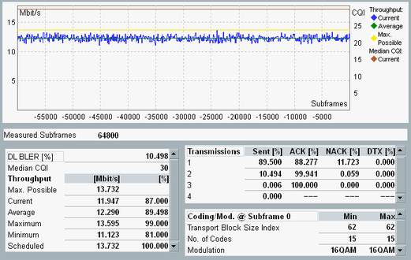

All results of the measurement are shown on the "HSDPA ACK" tab of the RX measurements view. The results are described below.

The diagram provides a graphical presentation of selected results. The X-axis indicates the sent subframes, with the last sent subframe labeled 0, the previously sent subframe labeled -1, and so on. Each value is calculated per 100 measured subframes.
The traces indicate the current and max. possible throughput in Mbit/s and the median CQI value. For a multi-carrier scenario, there are separate current throughput traces per carrier and an overall trace. The median CQI trace is also available per carrier.
You can enable/disable the display of the individual traces via the softkey - hotkey combination "Display > Select Trace".
To scale the x-axis and the y-axis use the softkey - hotkey combination "Display > X Scale / Y Scale".
This result is only available for multi-carrier scenarios. It indicates the sum of the measured current throughputs of all carriers.
Max. possible information bit throughput of the HSDPA link. This value is not a measurement result, but it is calculated from the configured HS-DSCH parameters. It depends, for example, on the number of HARQ processes and the inter-TTI distance.
The value is calculated under the assumption that all transmission packets are acknowledged in the first transmission (no retransmissions necessary).
For a multi-carrier scenario, it considers the sum of all carriers (max. possible overall throughput).
Information bit throughput of the HSDPA link in Mbit/s and as percentage of the "Max. possible Throughput".
- Current: Current throughput, updated in regular, non-configurable averaging intervals (smaller than a single shot statistics cycle). The averaging intervals are also used for the scheduled results.
The current throughput is closely related to the DL BLER:
(Throughput/%) = 100 – (DL BLER/%) - Maximum/Minimum: Maximum and minimum "Current" throughput result since the start of the measurement
- Scheduled: Maximum effective throughput of the connection. This value is the measured throughput of the downlink signal. It equals the current throughput assuming that all blocks are acknowledged in the first transmission.
The scheduled throughput is relevant for data application tests on HSDPA connections. Here the scheduled throughput generally decreases because the MAC-d PDUs carrying the user bits do not always fill the complete MAC-hs payload. In addition, various limitations in the network and the application protocols can decrease the scheduled throughput.
Thus the max. possible throughput is usually not reached for data application tests. Instead the scheduled throughput can be reached if only ACKs are reported.
In HSDPA test mode, the scheduled throughput is expected to be equal to the max. possible throughput. Values larger than the max. possible throughput are due to averaging effects, see below. - Average: Average of all "Current" values referenced to the last window size.
The fixed averaging intervals for the current and scheduled values have a variable overlap with the DL blocks. These DL blocks cause the result to jitter around the average value.
The table rows refer to transmissions with the 1st to 4th redundancy version (RV). "Transmission" means, a sent HSDPA subframe.
Select an RV coding sequence with up to four entries in the HSDPA settings. If you define a longer sequence, you nevertheless only get results for the first four redundancy versions.
The "Sent" column indicates the percentage of transmissions with a certain redundancy version, for example, 90% transmissions with first RV, 10% with second RV.
The columns "ACK", "NACK" and "DTX" indicate the percentage of transmissions with a certain redundancy version, that the UE has answered with ACK, NACK or not at all. The sum of the values in each row = 100%.
All results are available per carrier.
Percentage of transmissions that were not acknowledged, irrespective of the used redundancy version.
DL BLER = (#NACK + #DTX) / (#ACK + #NACK + #DTX) * 100%
This result is available per carrier.
Median of the CQI values reported by the UE (i.e. the middle of the CQI distribution: half the reported CQIs are above and half below the median).
This result is available per carrier.
Total number of already measured transmission packets (HSDPA subframes).
In single shot mode, both the number of already measured HSDPA subframes and the number of HSDPA subframes to be measured are displayed.
- Transport block size index
- Number of codes
- Modulation
- H-ARQ redundancy version